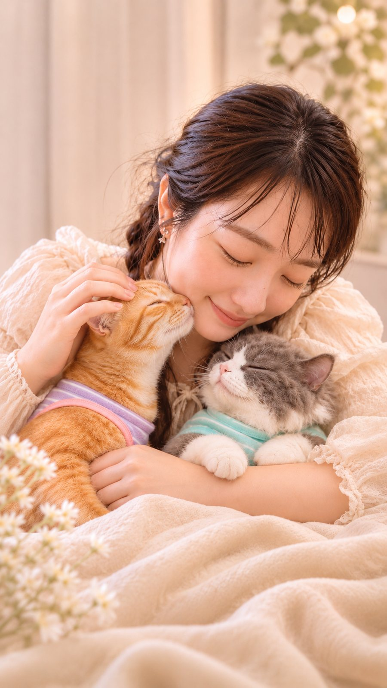

寵物溝通師 Yura
寵物溝通師毛孩調解委員 🪞專長：改善行為問題
多寵打架、一直叫、亂尿、挑食？
不用猜，我直接問牠 🧡
自家兩隻貓天天吵，我每天都在勸架 😹
89% 動物的行為問題
都是主人缺於陪伴的問題
當然我也不例外。我也是等到了變成我的困擾，我才開始溝通、想辦法，還找了第三方、另外一個溝通師一起處理（就是因為牠們對我太熟悉，會一直敷衍我 🙄）。
站在飼主的角度，我感受到 Kiyo 另一個面向：牠真的不是故意的！還有，牠真的好想玩。
像我家橘貓挑食，換過各種罐頭都沒用，最後我親手餵，牠反而只肯吃我餵的。後來搭配行為學老師的方法，才真正改善了這個困擾。
當我不再把寵物當孩子
一切都轉變了！
生命是平等的。會兇牠、想教育牠，是因為把牠當成「我的孩子」，而不是和我平等的生命，都一樣都是一個靈魂 🍀
我跟毛孩之間的緣分是怎麼開始的
小時候養過兩隻楓葉鼠，偷偷帶去學校陪我，後來牠們咬破籠子逃走了。
大學時遇到小饞（玄鳳鸚鵡），是同學撿到後託付給我。我還騙爸媽是自己撿到的，才把牠留下來。
那時候的我，對動物的愛太過執念，只希望牠們能永遠陪著我。
直到我用寵物溝通這個能力調解貓狗行為問題，才發現——我們無法妄想改變牠們，只能理解之後一起做出改變。
我為了小饞學會寵物溝通
卻選擇不再找牠
不是不想牠，而是明白每個生命都有自己的路。
我沒有放下，也不會忘記。只要記得，就會一直愛牠。
以前，我總覺得只要多幫助一些動物，就能減輕自己對小饞的虧欠。但經歷了 400 多場寵物溝通後，我終於慢慢放下了這份執念。
我明白了，一直困在虧欠裡，只會讓自己越來越痛苦。
現在的我，只想好好享受自己喜歡的事，做自己真正想做的事。因為我好好的，才能用更好的自己陪伴牠們！而我相信，這會是小饞希望的 🤍
現在，我想把這份愛延續下去
陪伴同樣失去毛孩的人
用祝福取代愧疚。
我不想再過那種生活了
朝九晚五，從設計到剪輯再到攝影，每天等著別人來評論我的作品：有沒有符合品牌需求？有沒有跟上所謂的美感？
直到有一天，我在拍寵物商品照的時候，看見那些狗狗和貓貓反覆被擺在產品旁邊，一張不行再拍一張。牠們有時候很害怕，也已經很乖了，但只要照片還沒達到「預期效果」，就要繼續一直拍，直到出現一張可以用的畫面為止。
我突然意識到——我跟牠們一樣。一直被矯正，被塑造成別人希望的樣子，久了之後連自己本來的樣子是什麼都忘了。
寵物溝通讓我重新開始照顧自己。因為這份工作很吃身心靈的狀態，我反而不能再忽略自己了。
感謝我自己學了寵物溝通，能直接翻譯動物和昆蟲的想法、感受、溫度，再轉變成創作，真的很幸福。能創作這些，也要謝謝每一個找我溝通的你們 🧡
我學的其實是「他心通」
道教修行的一種智慧。不是養小鬼，不是起乩，不用靠儀式，是透過自身修行去解讀訊息。
這條路很吃身心靈狀態，所以我很慶幸這堂課是「終身制」。修行路上問題永遠不會少，狀態不穩、感受不確定，到現在我都還是常常回去問老師。
第一次「溝通」成功的那天，我這輩子都不會忘記。說出答案的瞬間，同事嚇傻了，我自己也嚇傻了。那一刻我真的感受到，原來我也擁有和老師一樣的能力，開心卻又忍不住懷疑自己。
於是我開始了練習—驗證—練習—再驗證的日子，一次都沒有錯。
現在的我依然每天練炁，維持身心靈的穩定，不只是一種責任感，更是一種習慣。這堂課給我最大的收穫，不是學會了什麼技巧，而是找回一個健康的身心靈，以及知道如何在混亂中，讓自己重新歸零平靜下來 🧡
怎麼跟家人說明我在學寵物溝通？
老實說，一開始最怕的不是「他們信不信」，而是怕他們覺得我被騙、中邪 🤣
沒想到我媽聽完完全不驚訝，反而很支持：「你能做喜歡的事又能幫助人跟小動物！很好啊！」那句話讓我更堅定，我要一直做下去，直到我沒有力氣。
在一次家庭聚會上，我想著既然大家都養貓，那就當場驗證吧！家裡那隻生性怕生、常常躲在餐桌下的老貓米亞，溝通時說：「家裡聲音太吵太大，我很害怕，一點聲音就會緊張。」原來她小時候在鄉下，野狗跟噪音很多，那個陰影一直留到現在。
講完之後，大家開始搶著問自己家寵物的事，越問越信：「你真的會通靈！」
這幾年養牠們，最慶幸的是——
牠們其實是我的老師
Kiyo 常去咬 Suchan，其實只是無聊想玩，卻不會表達。這讓我想起小時候愛捉弄我的弟弟，我曾不小心把那份厭煩投射在牠身上，想「教訓」牠，結果只換來牠的害怕。
還好學了寵物溝通，我跟牠道歉，也挖出牠內心的孤單：牠只是想要有人陪。這也讓我終於正視被弟弟欺負的那個自己，與內在和解。現在牠想找姐姐玩，我就準備玩具或做響片訓練，讓牠們好好互動。
Suchan 教我耐心。語言不通，牠卻願意信任我，讓我餵藥洗澡（雖然去美容院都會尖叫著被退貨 😱）。牠愛探索世界，也一直陪在我身邊，是我沒電時能休息的地方。曾經我對牠有執念，是牠讓我明白：放下執念，轉換成祝福，才是最好的關係。
原來，養牠們這條路
是牠們陪著我，一起與自己的課題和解！
找回最喜歡的事
是表姐讓我愛上畫畫。她超愛畫畫，常自製漫畫給我看，是她教我畫人的臉。慢慢地我開始亂畫、臨摹各種東西，整個童年都在畫畫中度過，超級快樂。
小時候常聽到「學畫畫沒前途」「不要浪費時間」，這些話讓我一直覺得自己不夠好。出社會後，我學了很多新技能，卻漸漸忘了畫畫這件最快樂的事，只因為怕養不起自己，怕辜負爸媽的期待。
謝謝老師讓我遇見寵物溝通，才讓我真正面對自己、做自己，找回最喜歡的事。現在能跟這些動物結緣，真的說不完的感謝。
在我的溝通過程中
我最想讓客人感受到的
不只是我能將動物最真實的感受表達出來
而是整個溝通的過程，都是充滿溫度的。
無論是行為問題、想好好說再見、想更了解寶貝，還是想找到走失的寵物，我很清楚你們找我溝通的原因，不只是為了解決這些生活中的問題，更深層的是情感的表達，是想與寶貝們更靠近、更懂彼此的心意 🧡
因為我們都明白，牠們陪伴我們的時間只有短短幾年。正因為珍惜，才希望自己給牠的，除了日常的照顧，還有同等真誠的付出與回應。
解決問題之外
我更想做的，是幫助你們與寶貝之間
真實地互相訴說那些藏在心裡的話 😊